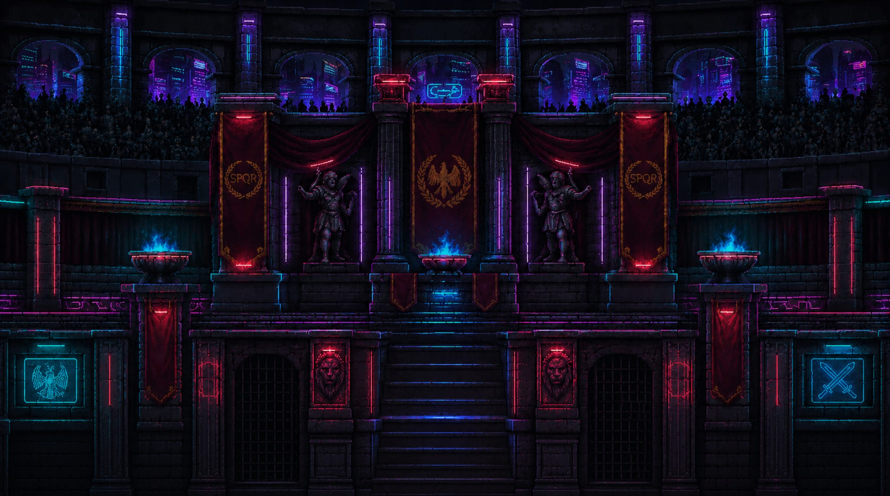
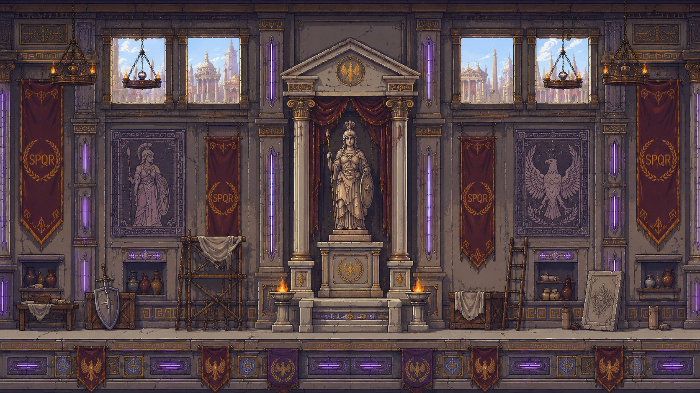
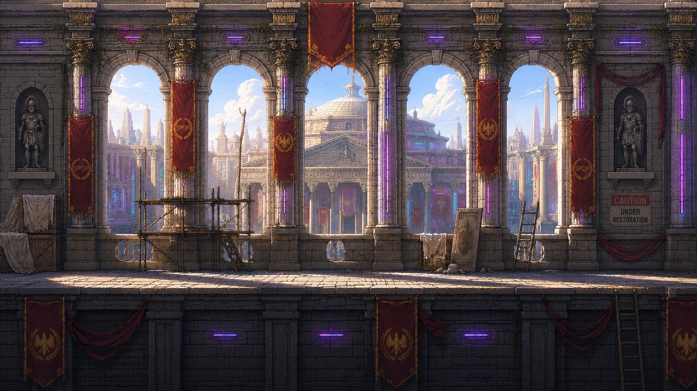

METROIDVANIA · IMPÉRIO QUE NUNCA CAIU
Gladiustoda estrada leva de volta
Dois mil anos depois da fundação, o Império não ruiu — se conectou. Explore uma Roma vertical de mármore e circuitos, onde cada arena guarda uma peça do que você perdeu.
O JOGO
Um império construído em camadas — algumas de pedra, outras de luz
Você acorda sem memória sob o Panteão, num templo que mistura estátuas de mármore com feixes de energia pulsando entre as colunas. Lá fora, a cidade continua exatamente como os relatos antigos descreviam — só que agora ilumina a própria noite.
Gladius é um metroidvania 2D de exploração não-linear: cada nova habilidade abre caminhos antes bloqueados — corredores esquecidos, arenas seladas, câmaras sob o Coliseu que ninguém devia reabrir.
Não existe apenas um império aqui. Existem as ruínas de vários, empilhados uns sobre os outros, e você é quem decide em qual camada vale a pena confiar.
Mundo vertical e conectado
Fóruns, catacumbas e arenas ligados sem telas de carregamento — a cidade inteira é o mapa.
Poder que reescreve a cidade
Cada relíquia recuperada muda o que era intransponível — um lance de escada, uma parede, uma lembrança.
Chefes que são monumentos
Enfrente guardiões erguidos como estátuas do próprio Império — cada um defende um capítulo da história.
REGIÕES
Três lugares, um só império
Um recorte do que já está em construção — cada região guarda seu próprio ritmo, perigos e segredos.

O Coliseu Elétrico
Onde os duelos decisivos acontecem — e onde a multidão nunca é só decoração.

O Panteão
O ponto de partida — e o único lugar onde o tempo parece mesmo ter parado.

Galeria dos Arcos
Passagem entre distritos, ainda em obras — literal e narrativamente.
REQUISITOS DE SISTEMA
O que você vai precisar
Valores estimados para a fase atual de desenvolvimento — serão confirmados antes do lançamento.
MÍNIMO
- Sistema
- Windows 10 (64-bit)
- Processador
- Intel i3 / Ryzen 3
- Memória
- 4 GB RAM
- Vídeo
- Integrado, 2 GB VRAM
- Armazenamento
- 2 GB disponíveis
RECOMENDADO
- Sistema
- Windows 10/11 (64-bit)
- Processador
- Intel i5 / Ryzen 5
- Memória
- 8 GB RAM
- Vídeo
- GTX 1050 ou superior
- Armazenamento
- 2 GB disponíveis (SSD)
EM DESENVOLVIMENTO
O instalador ainda não subiu para a arena
Gladius está sendo construído agora. Deixe seu e-mail pra ser avisado no instante em que a primeira build sair — e ganhe acesso antes de todo mundo.
Windows · build early access · ~2 GB